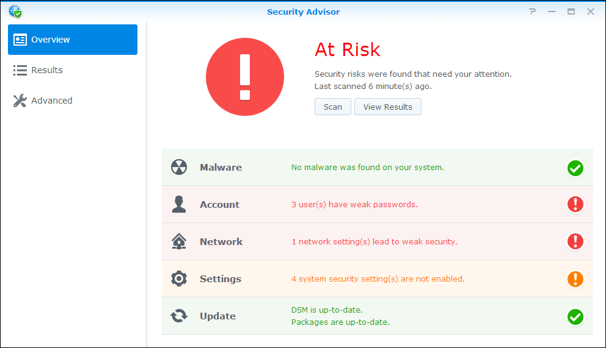

Overzicht
DSM bevat een nieuwe functie met de naam Veiligheidsadviseur, waarmee de Synology NAS veiliger blijft. Veiligheidsadviseur scant de algehele configuratie van de Synology NAS en geeft een gedetailleerd verslag over de beveiligingsstatus ervan. Daarnaast toont Veiligheidsadviseur u hoe u beveiligingsrisico's kunt herkennen en beheren. Open Veiligheidsadviseur en leer het volgende:
- Een veiligheidsscan uitvoeren
- Rapporten over veiligheidsregels weergeven
- Veiligheidsrisico's beheren
1. Een veiligheidsscan uitvoeren
- De eerste keer dat u Veiligheidsadviseur opent, wordt u gevraagd waar u de Synology NAS voor gebruikt. Kies afhankelijk van uw situatie Thuis of Werk en klik op OK. U kunt deze instelling altijd later wijzigen op de pagina Geavanceerd.
- Veiligheidsadviseur begint de Synology NAS-configuratie te scannen. Op de pagina Overzicht kunt u de algehele veiligheidsstatus, de scanvoortgang en een samenvatting van het resultaat zien.
- Als de scan klaar is, wordt voor elke categorie veiligheidsregels het resultaat weergegeven. Veiligheidsadviseur toont een algehele status voor elke categorie en een samenvatting van eventueel gevonden veiligheidsrisico's. 


2. Rapporten over veiligheidsregels weergeven
- Klik op Resultaat weergeven op de pagina Overzicht.U ziet gedetailleerde informatie in diverse rapporten over de voltooide scan.
- Dubbelklik op een veiligheidsregel om een gedetailleerd rapport te openen. Elk rapport kan informatie bevatten over de Ernstighied, Beschrijving, Details en Aanbevolen actie van elke veiligheidsregel.


3. Veiligheidsrisico's beheren
We kijken naar een voorbeeld van een mislukte veiligheidsregel en laten zien hoe we dit beheren.
- Veiligheidsadviseur herkent mogelijke veiligheidsrisico's voor mislukte veiligheidsregels. Hier detecteert Veiligheidsadviseur dat "Automatisch blokkeren is uitgeschakeld."
- Open een mislukte veiligheidsregel om gedetailleerde informatie te zien. Met Aanbevolen actie helpt Veiligheidsadviseur u bij het beheren van dit veiligheidsrisico.
- Klik op Openen om direct naar de betreffende instellingenpagina te gaan en de Aanbevolen actie te volgen.
- Op de pagina Resultaat scant u de mislukte veiligheidsregel opnieuw door de regel te selecteren en op Scannen te klikken.
- Er worden geen veiligheidsrisico's gedetecteerd voor deze veiligheidsregel. Veiligheidsadviseur blijft u helpen met het herkennen van mogelijke veiligheidsrisico's en het aanbevelen van acties om deze risico's te beheren. Houd de Synology NAS veiliger door regelmatig scans uit te voeren met Veiligheidsadviseur!